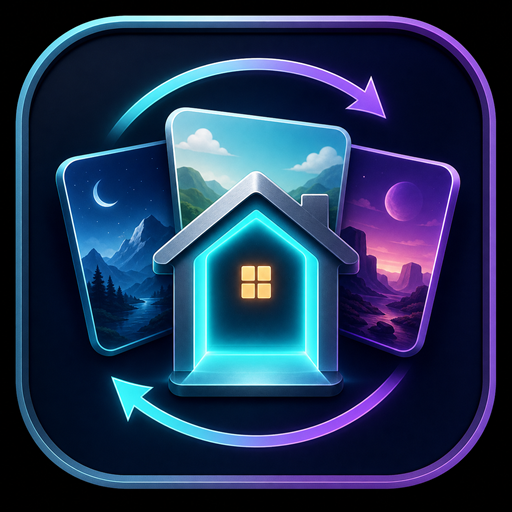

YOUR HOMES. ONE PLACE.
Quest Home Switcher
A little shortcut to your favourite places.
Open QHSYour next Home is one click away.
Keep it in your Library
In Meta Quest Browser on your headset:
- Browser menu
- Add shortcut to library
- Add
Where is it?
Look for the three dots ⋮ on the browser window itself, outside this page.
Your shortcut opens this page. Choose Open QHS to launch the app.
Back to launcherNot opening?Help & setup
Install a shortcut-enabled QHS version first: 2.1.6 or newer. Adding this shortcut does not install the Android app.
If the browser asks to open the app, allow it. If no app opens, use Unknown Sources to open QHS and check its version.
No Library option? Check for a Meta Quest Browser update. You can still bookmark this page.